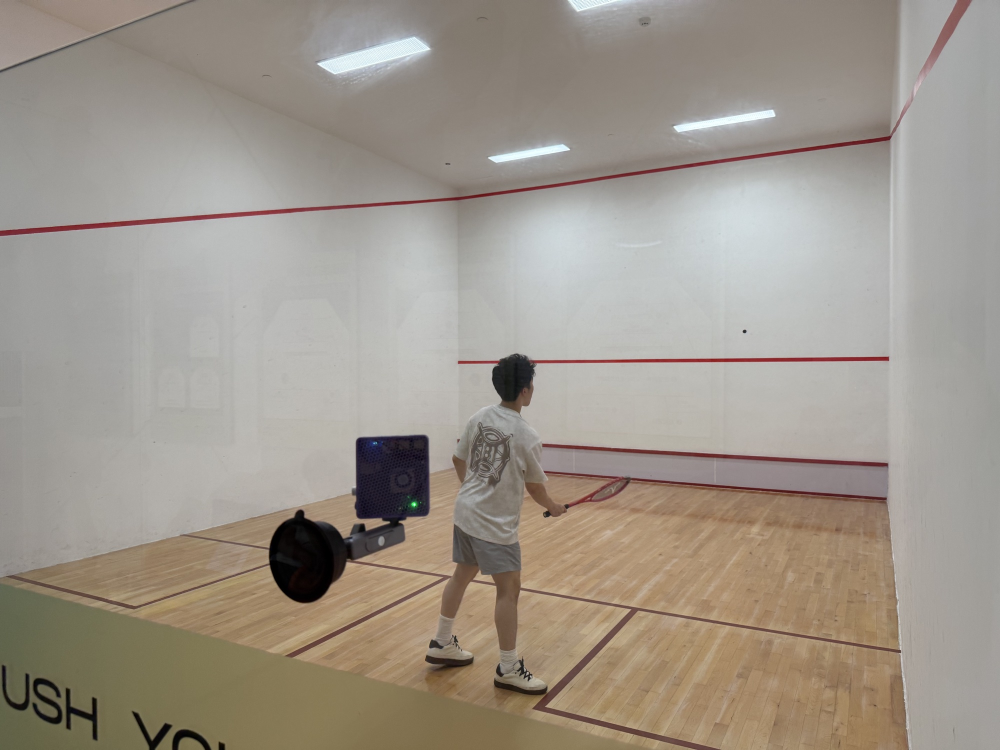
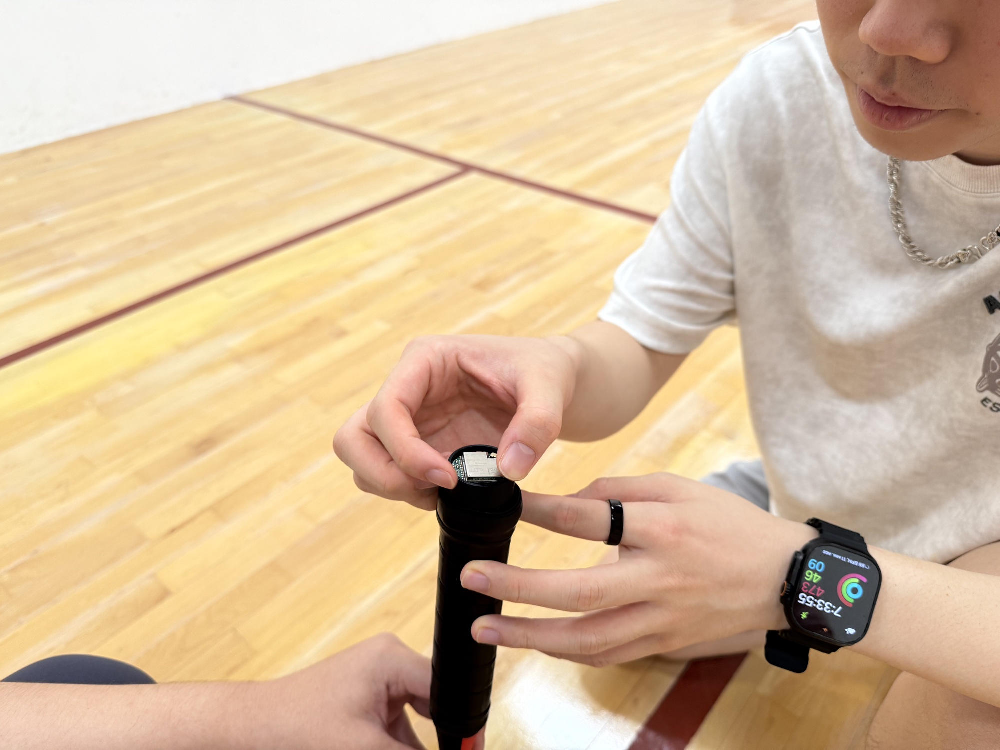
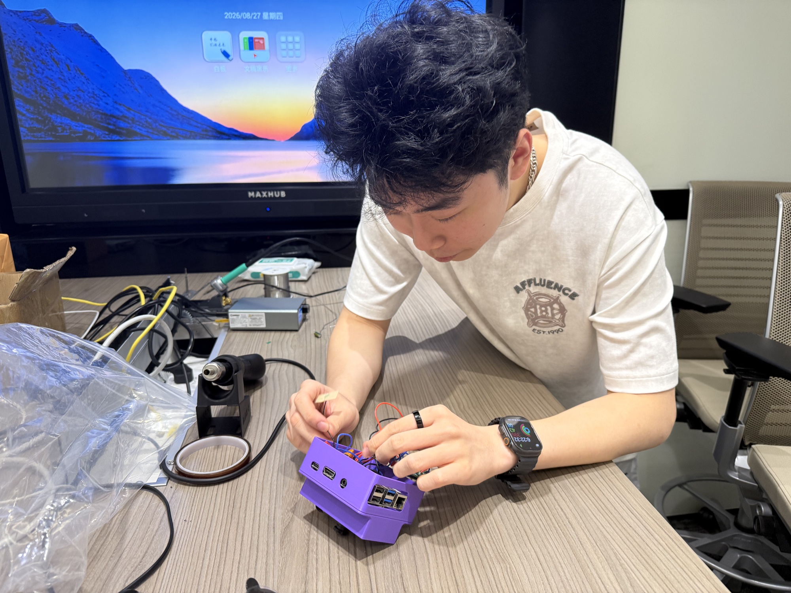
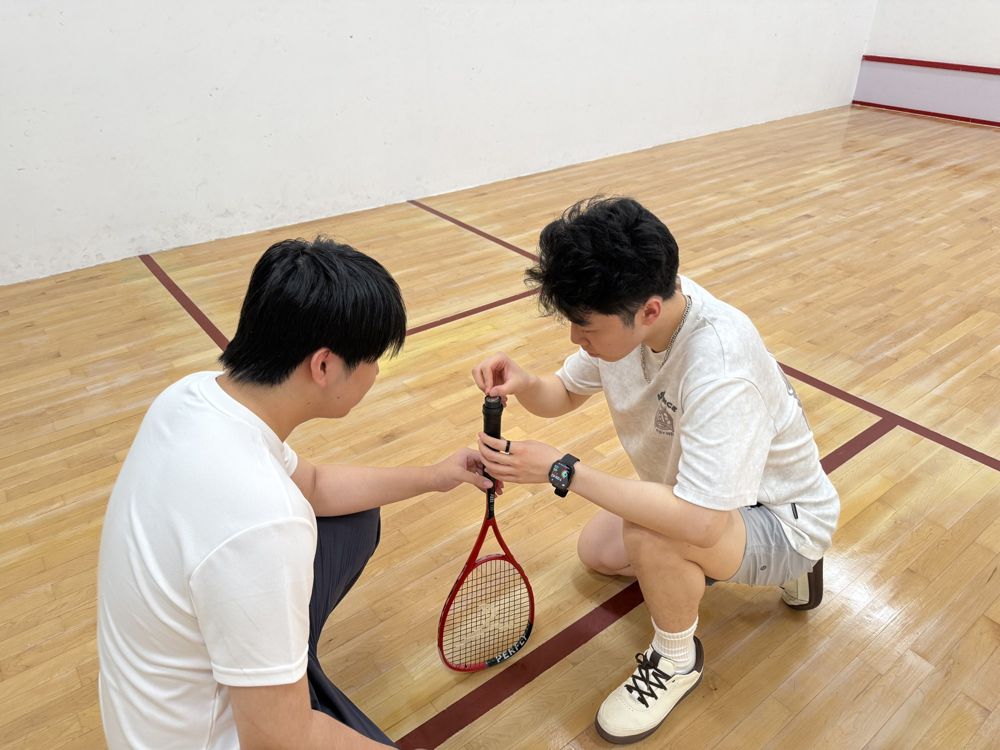
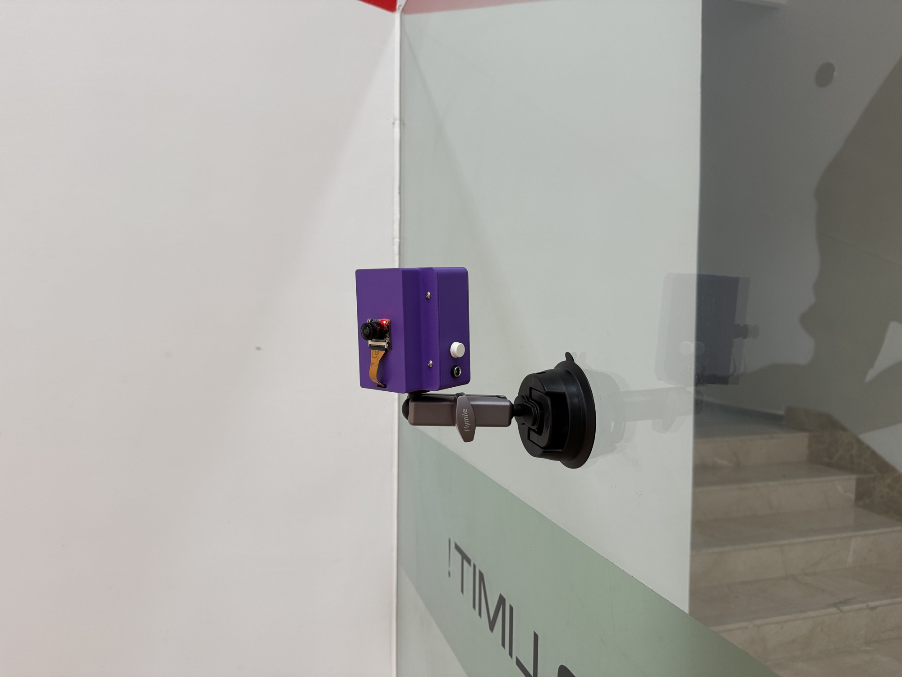
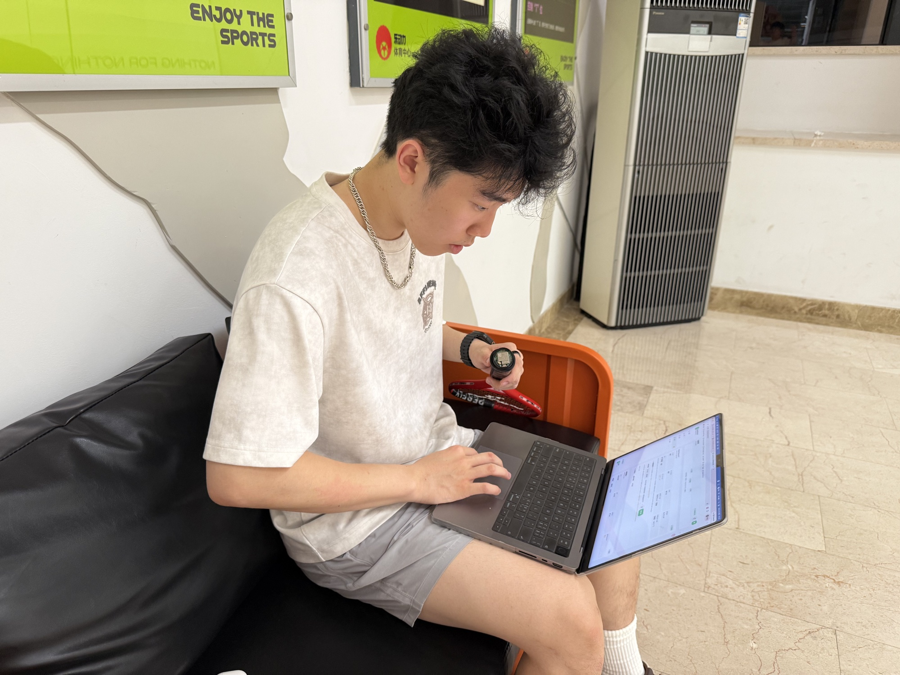

球拍运动采样
ICM42688 六轴惯性传感器，捕捉三轴加速度与角速度。
固件默认采样配置球拍的姿态，身体的动作。将两种视角连接起来，让训练中看不见的细节，变得清晰。

摄像头观察身体如何移动，球拍传感器记录挥拍如何发生。SquashSense 将两种信号汇聚到 ROCK 5C，在同一条时间线上理解一次完整的挥拍。
ICM42688 六轴惯性传感器，捕捉三轴加速度与角速度。
固件默认采样配置通过 MediaPipe 追踪人体骨架，观察关节角度和身体转动。
MEDIAPIPE POSE在场边连接摄像头和无线接收器，汇聚运动信号与训练画面。
传感器 + 视觉 + 同步复盘自制圆柱形姿态传感器，固定在球拍握柄底部。让球拍的加速度、角速度和相对姿态，成为可以回看的训练线索。

实物原型从人体骨架叠加，到球拍运动信号，再到训练结果。跟随一段实际测试，看看 SquashSense 如何连接动作与数据。
视频暂时无法播放，请稍后重试。
在训练画面上叠加骨架，观察肘、肩、膝关节角度与身体转动。
从准备、引拍到加速、随挥与回位，结合惯性信号分析挥拍阶段。
通过同步时间轴与训练记录，回看节奏、发力时序和重复挥拍的一致性。
组装硬件、调试信号、走进球场。SquashSense 是一个持续迭代的训练监测项目，每一次测试，都让运动与技术更近一步。

计算单元与摄像头的组装调试

拍柄末端的安装与信号测试

固定视觉设备，捕捉完整动作

连接电脑，检查传感器与训练界面